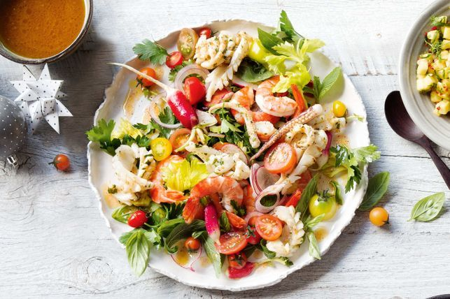

Seafood Salad
Save Recipe
Seafood Salad
Rate This Recipe:
Prep Time : 20min | Cooking Time : 1hr
15 Ingredients
- 3 cups mixed fresh herb leaves (mint, basil, parsley)
- 1 lime, rind finely grated
- 1 garlic clove, crushed
- 1kg baby squid hoods, cleaned, scored, cut into 4cm pieces, tentacles reserved
- 1 tbsp extra virgin olive oil
- 1 celery heart, thinly sliced, leaves reserved
- 1 small red onion, thinly sliced
- 500g mixed baby tomatoes, halved if large
- 4 radishes, thinly sliced, plus extra, halved
- 1.5kg cooked prawns, peeled, deveined, tails intact
- 3 small truss tomatoes, halved
- 80ml (1/3 cup) extra virgin olive oil
- 60ml (1/4 cup) lime juice
- 1 1/2 tbsp white balsamic vinegar
- 1/2 tsp caster sugar
5 Method Steps
- Step 1
Preheat oven to 180C/160C fan forced. Line a baking tray with baking paper.
- Step 2
For the dressing, place the tomato, cut-side down, on prepared tray. Drizzle with 2 tsp oil. Season. Roast for 25 minutes or until tender. Transfer to a sieve set over a bowl. Use the back of a spoon to push through the sieve to extract juice. Discard solids. Combine the lime juice, vinegar, sugar, 1/3 cup tomato puree and remaining oil in a bowl. Season well. Reserve 1/4 cup of the dressing.
- Step 3
Finely chop 2 /3 cup of the fresh herbs. Combine the chopped herbs, rind, garlic and reserved dressing in a bowl. Combine the squid and oil in a separate bowl. Season.
- Step 4
Preheat a barbecue or chargrill on medium-high. Cook the squid, turning, for 2 minutes or until just cooked through. Add to the herb mixture. Toss to coat.
- Step 5
Combine the celery, celery leaves, onion, tomato, radishes, prawns, squid mixture, remaining herbs and half the dressing in a bowl. Toss to combine. Transfer to a plate. Serve with remaining dressing on the side.